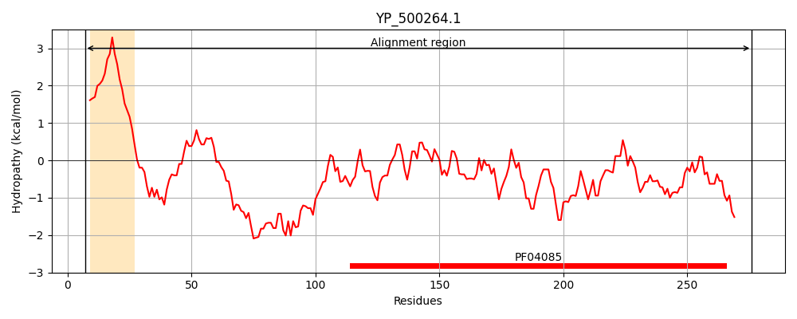
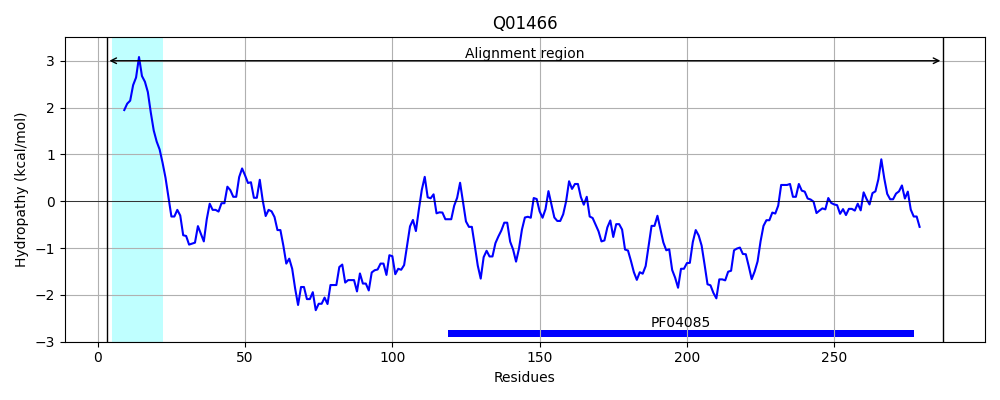
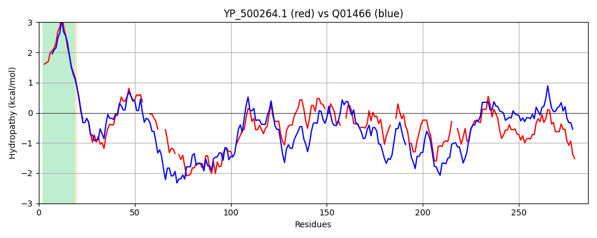

Hit Accession: Q01466
Hit TCID: 9.B.157.1.1
Hit Description: gnl|BL_ORD_ID|12005 gnl|TC-DB|Q01466|9.B.157.1.1 Cell shape-determining protein MreC OS=Bacillus subtilis (strain 168) GN=mreC PE=1 SV=3
Mach Len: 286
e:0.000000
Query TMS Count : 1
Hit TMS Count: 1
TMS-Overlap Score: 0.900000
Predicted Substrates:CHEBI:5140;folic acid
BLAST Alignment:
Score: 432 , Bit scores: 171 bits, E-value: 7.6e-52, Alignment length: 286, Percentage identity: 36
Query: 7 NNKLIVVLCAIIVFIALIGLSIRS-QSQSPPEQYIGDSVSFGQRVVSYPVNFVAG---TIGDF---FKKGDS-KESKNKISQLESKNQQLEAENEKLKKELD-LKDISKFDPISTTVLARNPDQWMNTIVIDKGSKSGITSNMAVMTSQG-FVGRVTK--VNKFSSQVDLISTNTRAGKLSVNI--QHGSKNIFGLIDRYDEKNSELVISDINNRD--NISKGDKVVTSGLADQLPSNLYIGEVTKVQNDQYGLAKEVRVKTGADLTDLSHVYVAKRDPKTIPDDE 276
N +L+++L II+ +A+IG S++ ++ + PE+ IGD+ Q + P F AG I D +K+ + +E + +Q E+K Q+LE EN+ L+ EL +K I + PI TV+AR+PD W + I+KG++ + +MAV +G +G++ +N F+S V L+S R +++ I + GSK +GLI+ YD++ L ++ I +D ++ KGD + TSG P L IGEVT +++D YGL K VK ADLTDL++V V RD T+ +E
Sbjct: 3 NKRLMLLLLCIIILVAMIGFSLKGGRNTTWPEKVIGDTTGVFQNIFHTPAEFFAGIFENINDLKNTYKENERLREKLDGQTQYEAKLQELEEENKSLRDELGHVKSIKDYKPILATVIARSPDNWAKQVTINKGTQQNVAKDMAVTNEKGALIGKIKSSGLNNFTSAVQLLSDTDRNNRVATKISGKKGSKG-YGLIEGYDKEKKRLKMTIIERKDKQDVKKGDLIETSGTGGVFPEGLTIGEVTDIESDSYGLTKVAYVKPAADLTDLNNVIVVNRDVPTVDTEE 287 | Protein Hydropathy Plots: |
|---|
|  |  |
Pairwise Alignment-Hydropathy Plot:
|
|---|
|  |